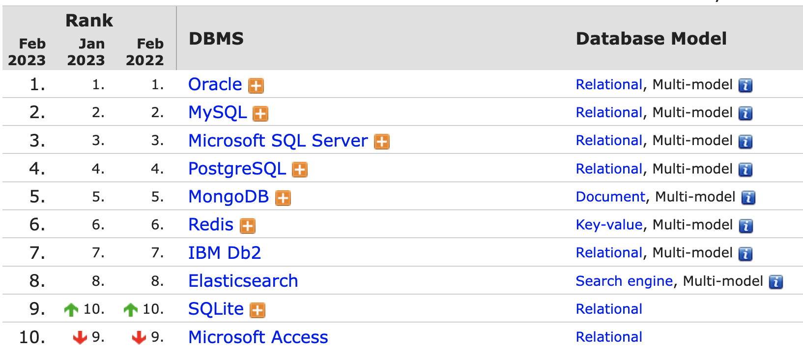

Šis kursas, skirtas susipažinti su duomenų bazių projektavimo, kūrimo bei valdymo principais. Kurso metu apžvelgsime pagrindines duomenų valdymo komandas ir duomenų projektavimo įrankius. Taigi, pradėkime nuo pradžių - duomenų bazės apibrėžimo.
Duomenų bazė - organizuotas struktūrizuotų duomenų rinkinys, įprastai, saugomas elektroniniame įrenginyje.
Duomenų bazės valdymo sistema - priemonių rinkinys, apimantis duomenų saugojimo, duomenų valdymo, duomenų kontrolės sprendimus. Minėtieji sprendimai apima tai kaip fiziškai duomenys bus saugomi, kaip vėliau jie bus valdomi naudojant specialią kalbą, veiksmus su duomenimis sekimą ir kontrolę, įvairius optimizacijos sprendimus.
Yra daugybė duomenų bazių tipų. Duomenų bazes pagal vidinę duomenų struktūrą, galima skirstyti į:
Duomenų bazes pagal duomenų bazės paskirtį galima skirstyti į:
Kurso metu, beveik visą dėmesį skirsime reliacinėms duomenų bazėms, nes šio tipo duomenų bazės yra labiausiai paplitę ir yra dominuojančiose pozicijose duomenų bazių rinkoje. Kaip matome žemiau pateiktame paveikslėlyje, net 7 iš 10 populiariausių duomenų bazių sistemų yra reliacinių duomenų bazių valdymo sistemos.

1 pav. Duomenų bazių valdymo sistemų reitingas.
(šaltinis: https://db-engines.com/en/ranking)
Kurso metu nagrinėsime reliacinių duomenų bazių projektavimo principus ir SQL (angl. Structured Query Language) standartą, dėl to duomenų bazių valdymo sistemos pasirinkimas nėra ypatingai svarbus, nes visos duomenų bazių valdymo sistemos palaiko SQL standartą. Viską ką galima atlikti vienoje sistemoje, bus galima atlikti kitoje, o rezultatas bus analogiškas. Užduočių atlikimui ir pavyzdžių nagrinėjimui naudosime MySQL valdymo sistemą.